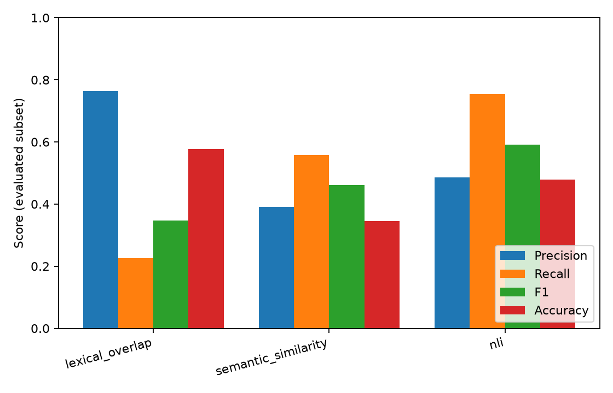
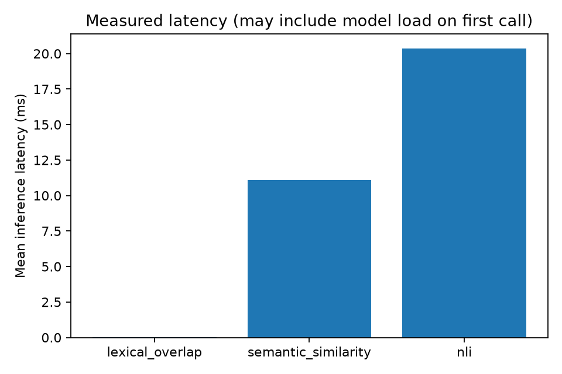

# HalluBench — Findings Report
Experiment status: **finished**
Held-out examples selected: **3004**
Evaluation tier: **labelled_dataset** (fixture smoke is NOT a public benchmark)
Test-ID SHA-256: `b541c442f0ad909bbd6cba4e9bf515281a35e1c000811c64aa40bf81eddd40ad`
## Objective and interpretation
Measures agreement between detector predictions and dataset-defined, evidence-relative labels.
It does not establish open-world truth, claim completeness, or detector reliability on unseen domains.
HaluEval 'hallucinated' is a constructed coarse label, not an adjudicated contradicted-claim label.
## Observed performance
| Detector | Evaluated | Coverage | Hallucination precision | Recall | F1 | Accuracy | Mean latency (ms) |
|---|---:|---:|---:|---:|---:|---:|---:|
| lexical_overlap | 2997 | 0.9977 | 0.7630 | 0.2250 | 0.3476 | 0.5766 | 0.03 |
| semantic_similarity | 3004 | 1.0000 | 0.3919 | 0.5586 | 0.4606 | 0.3459 | 11.10 |
| nli | 3004 | 1.0000 | 0.4867 | 0.7550 | 0.5919 | 0.4794 | 20.36 |
## Data eligibility and failure modes
### lexical_overlap
- Eligible reference labels: 3004; correctly excluded unknown-reference labels: 0.
- Processing status counts: `{'ok': 2997, 'abstained': 7, 'missing_evidence': 0, 'error': 0, 'unavailable': 0}`; coverage uses eligible denominator, never converts failures into predictions.
- Observed false positives/negatives in stored errors: 1269; suggested categories need human review.
- New-inference wall time: 0.088s (resumed runs exclude reused inferences).
- By task: qa=0.348 F1 (n=2997)
- By dataset: HaluEval/qa=0.348 F1 (n=2997)
- By generator: HaluEval upstream generations (specific model attribution unavailable)=0.348 F1 (n=2997)
### semantic_similarity
- Eligible reference labels: 3004; correctly excluded unknown-reference labels: 0.
- Processing status counts: `{'ok': 3004, 'abstained': 0, 'missing_evidence': 0, 'error': 0, 'unavailable': 0}`; coverage uses eligible denominator, never converts failures into predictions.
- Observed false positives/negatives in stored errors: 1965; suggested categories need human review.
- New-inference wall time: 33.369s (resumed runs exclude reused inferences).
- By task: qa=0.461 F1 (n=3004)
- By dataset: HaluEval/qa=0.461 F1 (n=3004)
- By generator: HaluEval upstream generations (specific model attribution unavailable)=0.461 F1 (n=3004)
### nli
- Eligible reference labels: 3004; correctly excluded unknown-reference labels: 0.
- Processing status counts: `{'ok': 3004, 'abstained': 0, 'missing_evidence': 0, 'error': 0, 'unavailable': 0}`; coverage uses eligible denominator, never converts failures into predictions.
- Observed false positives/negatives in stored errors: 1564; suggested categories need human review.
- New-inference wall time: 61.209s (resumed runs exclude reused inferences).
- By task: qa=0.592 F1 (n=3004)
- By dataset: HaluEval/qa=0.592 F1 (n=3004)
- By generator: HaluEval upstream generations (specific model attribution unavailable)=0.592 F1 (n=3004)
## Paired uncertainty (grouped bootstrap)
- lexical_overlap__vs__semantic_similarity: {'status': 'estimated', 'unit': 'source/parent group', 'n_groups': 1502, 'n_pairs': 2997, 'iterations': 250, 'seed': 17, 'metric': 'hallucination F1 delta A-B', 'observed_delta': -0.1139383089979949, 'ci95_percentile': [-0.13678582482172924, -0.08604485742022826], 'warning': 'Exploratory; no multiplicity correction, CI unstable for few source groups'}
- lexical_overlap__vs__nli: {'status': 'estimated', 'unit': 'source/parent group', 'n_groups': 1502, 'n_pairs': 2997, 'iterations': 250, 'seed': 17, 'metric': 'hallucination F1 delta A-B', 'observed_delta': -0.2452283590693899, 'ci95_percentile': [-0.2724895235014412, -0.21457940534419329], 'warning': 'Exploratory; no multiplicity correction, CI unstable for few source groups'}
- semantic_similarity__vs__nli: {'status': 'estimated', 'unit': 'source/parent group', 'n_groups': 1502, 'n_pairs': 3004, 'iterations': 250, 'seed': 17, 'metric': 'hallucination F1 delta A-B', 'observed_delta': -0.1312486497111457, 'ci95_percentile': [-0.15171420577597278, -0.11502599780339479], 'warning': 'Exploratory; no multiplicity correction, CI unstable for few source groups'}
## Generated artifacts
- `summary.json`, `experiment.json`, `dataset_quality.json`: experiment metadata and quantitative results.
- `predictions_*.jsonl`, `errors_*.jsonl`: all returned statuses and stored errors.
- `confusion_*.png`, `detector_comparison.png`, `latency.png`; optional reliability, score distribution, PR curve and descriptive threshold-sensitivity plots.
## Limits and required next research
- Unsupported is not logically false; neutral NLI outputs cannot prove incorrectness.
- Response labels are not automatically atomic-claim labels, and sentence splitting is approximate.
- API/self-reported confidence is not calibrated probability; no costs are inferred without usage/prices.
- Dataset construction artifacts, distribution shift and correlated sources constrain generalization.
- Bootstrap intervals are exploratory; significance and universal superiority are NOT claimed.
- Missing model or data access produces no evaluation rather than a zero score.

